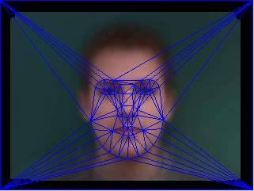

Part 1 : Morphs
Let's start with a brief overview of what we're trying to do. Given two faces, we want to morph one into the other. Performing a naive, linear interpolation on the pixels will result in a lot of ghosting. Instead, we want to warp the features of the image directly. In order to do this, we define a mesh on both images im1 and im2, called M_1 and M_2. These two meshes must have the same amount of control points to allow for bijectivity. We define the mesh triangles by computing
the delaunay triangulation on the mean control points.
Once these two meshes are defined, a simple linear interpolation between meshes allows for a smooth warping process. For some warp fraction alpha in [0, 1], we linearly interpolate the control points. Then, for each pixel in our output image, we use simplex to find which triangle T in our mesh it is in. Then, we find the affine transformation A from the warped triangle T to the triangles in the original meshes M_1 and M_2: call these triangles T_1 and T_2.
We compute the affine transformation by solving a system of linear equations; that is, let the top 6 entries of A be a column vector a. Then, we have a system of 6 equations, derived from A * X_i = X'_i, where X is the ith point of each triangle, for i in [1, 3].
Finally, for each pixel in the otuput image we compute the inverse warp using the affine transformations per pixel we found in the previous step, and interpolate their values onto im1 and im2. We cross-dissolve the result by fraction alpha.
Result
Description
Here is my first attempt. Notice the alignment issues; since our faces are not facing in the same direction, there is still some ghosting. Additionally, this is where we first notice that since glasses do not exist in any linear subspace of features, they will simply ghost in and out.
This one turned out really well. Their faces were both facing in the same direction, and aligned nicely, which resulted in a smooth morph. I also show the mean face between them.
This is the mean face for the above example.
Here I morph Mamiko and Mikoshiba from Gekkan Shoujo Nozaki-kun. Obviously there's a ridiculous difference in eye size, but it still works pretty well for the most part even on 2D drawings.
Another example of morphing two of my friends.
I morph myself into Riyaz. Again, the glasses ghost.
Part 2 : Averages
Now, given a larger dataset of pre-annotated images, we can get some interesting information. We can average the control points, and then find an average face by inverse-warping each pixel onto every image in the dataset and finding the mean.
Additionally, using the average face as a base image B, for any image I, we can let I-B be the vector in the direction of image I, and produce caricatures of image I by extrapolating from the mean.
We compute the extrapolated control points by factor alpha as B + alpha * (I-B); then, we can use pixels from either image depending on what effect we want to achieve.
Result
Description
Here is the average face using this pre-annotate dataset. This can be easily computed by adapting the code from the previous part to do a running average morph; where for images I_1 ... I_n, we have M_i+1 = (1/i+1) * (i*M_i + I_i+1). The black border is due to alignment issues between the images.

The mesh of the average face.
Here are a few examples of people in the dataset morphing into the average face.
The average face, warped onto my geometry.
My face, warped onto the average geometry. A lot is wrong with this picture, but it's pretty unavoidable. I'm not Danish and my facial structure isn't remotely Danish. And I'm wearing glasses.
A morphing cariacature of my face, extrapolating from the Danish average. The way this is computed is: call the control points of my face C, and the control points of the average face M. Then for alpha in [1, 2], we compute the extrapolated control points M + alpha*(C-M), and then carry out the interpolated warp. Letting alpha be greater than 2 is possible if the average dataset fits more nicely with my face; however, in this case attempts to increase alpha past
2 result in a lot of odd edges, especially due to the warping caused by my glasses.
Bells & Whistles : Face Style Change
Using the average face image of a certain gender/ethnicity/etc, we can try to morph a source image into that by using the control points from the target image while preserving the source image's pixel information.
Result
Description
I take the average Han Chinese female face and try to morph mine into it. While the facial structure matches, it really doesn't look that good.
Bells & Whistles : Group Face Morphing
I participated in the chain face morphing. Here's the video:
Bells & Whistles : Automatic Morphing
Images
Description
As an initial approach, I tried using corner detection as described in chapter 4 of the Szeliski textbook to detect features. I used the Harris corner detector, the BRISK feature extractor, and SSD to match features. I also tried using SURF (pictured to the left).
Naive feature detection and matching doesn't work well on faces, as we can see. While the feature detectors do detect all the noticable features, there is no consistent way to construct a 1-1 mapping between the
features of two faces. This is largely due to the fact that by only looking at the pixels surrounding two faces we lose all the important location and facial structure information. Instead, we want to try to use machine learning techniques to train a classifier on a dataset to detect facial features.
I use the Viola-Jones object-detection framework, trained on typical facial features like eyes, nose, and mouth to find bounding boxes on each specific facial features on both faces. We eliminate some false matches by noticing that the left eye must reside to the left, the right eye to the right, and that the match for the mouth likely has the largest bounding box. Under these constraints, we can construct a rough mesh that does not take into account the outer
edges of the face.
Looking at the morphing result, we notice that since the control points are very rough, there's still ghosting - a lot less than a naive morph, but especially around more inaccurately constrained areas like the mouth the shapes don't morph smoothly.
Now I use a pre-trained, full face classifier to detect consistent feature points. While this classifier is quite robust at detection, it's not optimal for matching. As a result, there's some mesh tearing around the mouth. However, for a fully automatic morph, this worked quite well.
What I learned
Warping meshes to combine images definitely has the nicest result; however, the problem of defining these meshes dynamically is another huge problem. Of course, computing and modelling the geometry of objects is an entire field of study; we only scratch the surface for a single application in this project.